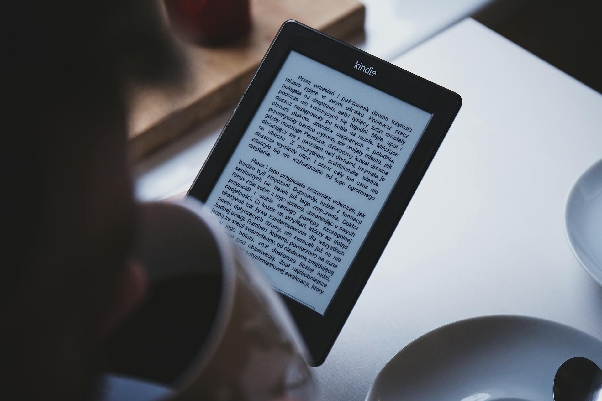

Favorite Thing
My favorite thing that I own is my Kindle. It's like a regular tablet, but it's specifically made to read books. Its biggest different to a regular table is that it has an E-Ink screen which makes it look like a real book page. The screen also doesn't hurt my eyes even if I read for hours in bed, unlike a normal phone with its blue screen. This has been a game-changer for me, especially since I usually read some novels before sleep.
Additionally, I really love about my Kindle is the convenience it provides. I can store hundreds of books in one device, which mean I will never have to worry about running out of things to read. If I am reading some fantasy story and suddenly want to switch to a nonfiction book, I can do that in an instant. This is especially useful when I am traveling. I can just bring my Kindle instead of multiple books. There's also a built-in dictionary, so when I come across a word that I don't know the meaning of, I just tap on it and get the definition in an instant. It makes reading hard topic easier and helps me understand the new word without disrupting the reading experience.
Kindle is also more distraction-free than my phone. When I'm reading on my phone, I tend to get tempted to check notifications or social media. But with my Kindle, I can focus on the content entirely. The interface in Kindle is also simple and straightforward. I can just dive into the book the moment I turn the Kindle on.